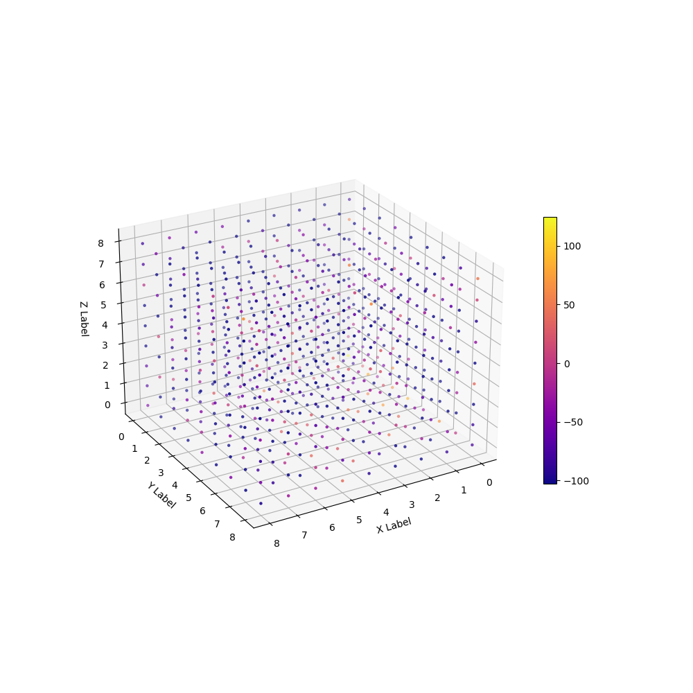

author: niplav, created: 2020-11-20, modified: 2022-06-06, language: english, status: notes, importance: 4, confidence: highly likely
The Diamond-Square algorithm is a terrain-generation algorithm for two dimensions (producing a three-dimensional terrain). I generalize the algorithm to any positive number of dimensions, and analyze the resulting algorithm.
Libre de la metáfora y del mito labra un arduo cristal: el infinito mapa de Aquel que es todas Sus estrellas.
— Jorge Luis Borges, “Spinoza”, 1964

